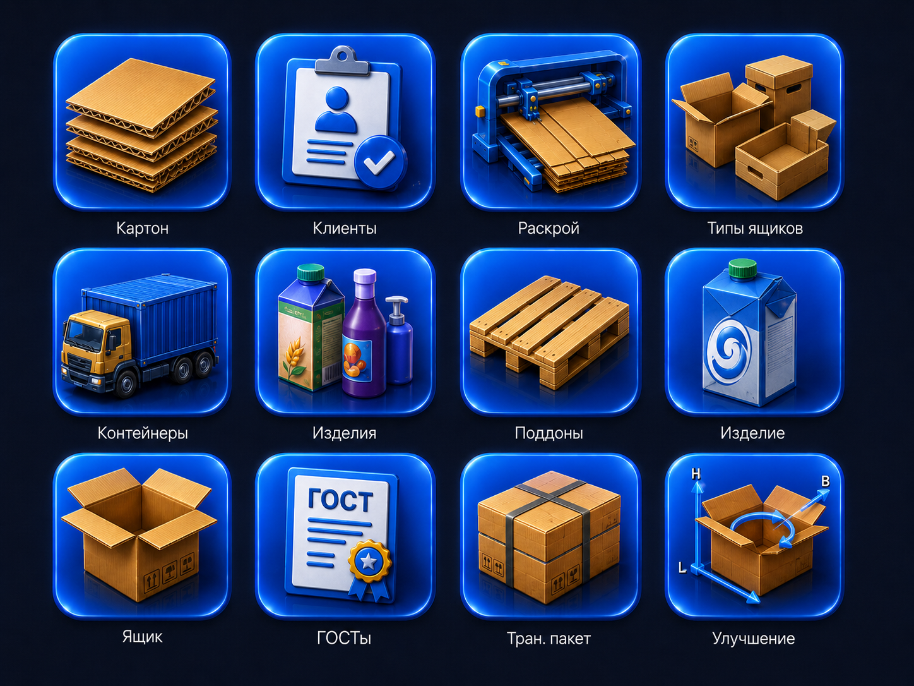
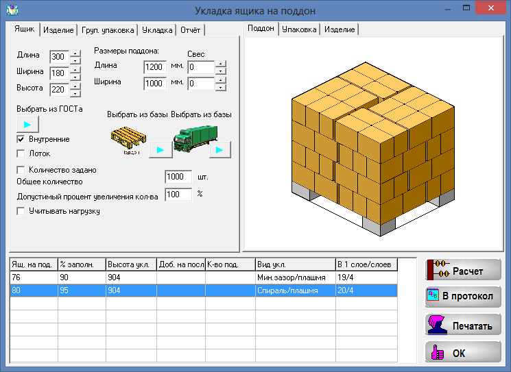
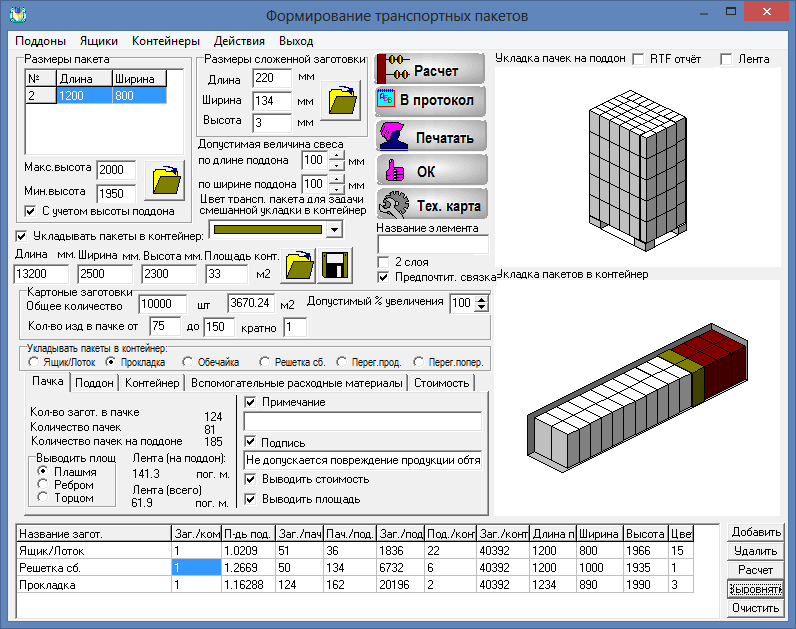

Раскрой гофролиста
Corrugated cutting
Подбор карт раскроя, учет форматов, сроков, марок картона и технологических ограничений.
Cutting maps, board formats, due dates, grades and production constraints.
Комплексное решение для индустрии тары и упаковки
Integrated software suite for packaging engineering
Один рабочий комплекс для расчета гофрокартона, изделий, ящиков, раскроя, транспортных пакетов, поддонов, контейнеров, ГОСТов, сырья и производственных сценариев.
One desktop suite for corrugated board, products, boxes, cutting plans, transport packages, pallets, containers, standards, raw materials and production calculations.
ПОЯС объединяет инженерные расчеты упаковки с производственными справочниками: клиенты, изделия, типы ящиков, ГОСТы, сырье, контейнеры, поддоны и транспортные нормы доступны из одного рабочего стола.
POJAS combines packaging engineering calculations with production reference data: customers, products, box types, standards, raw materials, containers, pallets and transport rules are available from one desktop.

Модули закрывают полный цикл упаковочного расчета: от изделия и ящика до поддона, контейнера, норм отгрузки и отчетов.
Modules cover the full packaging calculation flow: from product and box to pallet, container, shipment norms and reports.
Подбор карт раскроя, учет форматов, сроков, марок картона и технологических ограничений.
Cutting maps, board formats, due dates, grades and production constraints.
Свободная укладка, решетки, зазоры, ориентации изделий и поиск подходящих типоразмеров ящиков.
Free packing, dividers, clearances, product orientations and suitable box sizes.
Справочники ГОСТов, расчет параметров гофроящика и контроль ограничений по упаковке.
Standards reference data, corrugated box parameters and packaging constraints.
Расчет укладки ящиков на поддон, контейнеров и транспортных схем с учетом габаритов и массы.
Box-to-pallet, container and transport layouts with dimensions and weight limits.
Справочники марок, сортов, производителей, складских остатков и расчет потребности для заказа.
Grades, manufacturers, stock balances and material demand for orders.
Расчет транспортных пакетов, высот, норм отгрузки и вспомогательных производственных параметров.
Transport packages, heights, shipment norms and supporting production parameters.
Иллюстрации и формулировки взяты с текущей страницы PackTuning о ПОЯСе: это именно модули комплекса, а не скриншоты сторонних программ.
Images and descriptions are based on the current PackTuning POJAS page: these are POJAS suite modules, not third-party screenshots.

Расчет размеров ящика с учетом стоимости транспортной тары, ограничений изделия и обрезного отхода.
Box dimension calculation with transport packaging cost, product constraints and trimming waste in mind.

Поиск укладки разных типов изделий в заданный ящик, включая решетки, перегородки, зазоры и кантование.
Packing layouts for different product types, including dividers, clearances and permitted orientations.

Подбор ящика из ГОСТов или собственного набора размеров, например складских ящиков и существующих штампов.
Choosing a box from standards or a custom set, such as stock boxes and existing cutting dies.

Оптимизация размещения готовых ящиков на поддоне для снижения числа поддонов и транспортных расходов.
Optimized pallet layouts to reduce pallet count and transportation cost.

Группировка изделий по ящикам из ГОСТов или произвольных размеров, в том числе через модуль анализа совместимости.
Grouping products into standard or custom boxes, including compatibility analysis.

Расчет погрузки ящиков в контейнер, вагон, трюм или автофургон, с поддонами или без них.
Loading boxes into containers, rail cars, ship holds or trucks, with or without pallets.

Подбор числа заготовок в пачке и высоты пакета для отгрузки сложенных ящиков и заполнения контейнера.
Selecting bundle count and package height for shipping folded boxes and filling a container efficiently.
История комплекса хорошо описана в профильной статье журнала «Пакет» и в современном обзоре PackTuning.
The suite history is covered in a trade magazine article and in the current PackTuning overview.
Статья Семена Фрейдина и Виктора Губерниева в журнале «Пакет» описывает исходную идею ПОЯС: переход от ручного подбора гофроящика к комплексной оптимизации, где одновременно учитываются изделие, прочность, укладка, поддоны, контейнеры, себестоимость и унификация типоразмеров.
The article by Semen Freydin and Victor Guberniev describes the original POJAS idea: moving from manual box selection to an integrated optimization process that considers product geometry, strength, packing, pallets, containers, cost and box-size unification.
Напишите, какие задачи упаковки нужно считать: раскрой, ящики, ГОСТы, транспорт, склад сырья или комплексное внедрение. Можно обсудить демонстрацию, перенос данных и доработки под производство.
Tell us which packaging tasks you need to calculate: cutting, boxes, standards, transport, raw material stock or a complete deployment. We can discuss a demo, data migration and custom production logic.